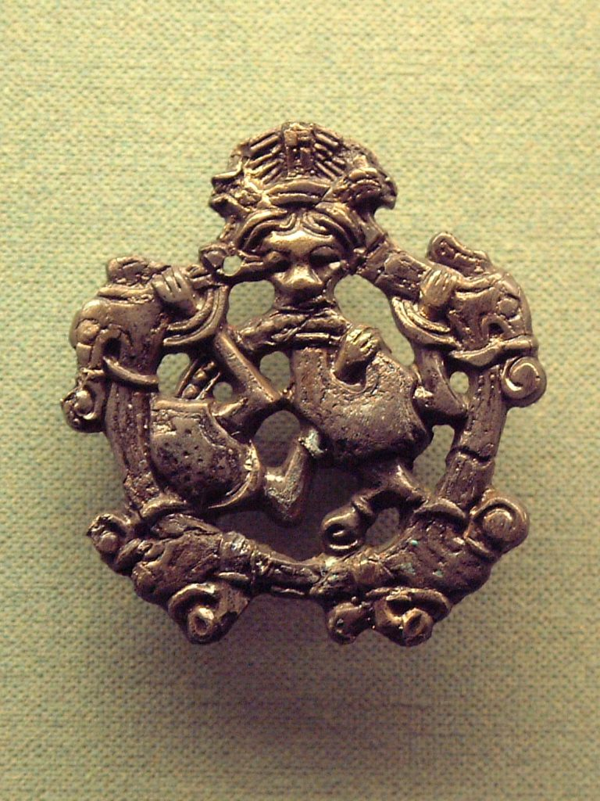

Sociedad y Cultura
Sociedad Vikinga
La sociedad vikinga se desarrolló en Escandinavia durante la llamada Era Vikinga (aproximadamente del siglo VIII al XI). A pesar de su fama como guerreros y saqueadores, los vikingos conformaban una comunidad compleja, con normas sociales, estructuras políticas y una cultura bien definida.
Estructura Social
La sociedad vikinga era jerárquica, dividida en tres clases principales:
- Jarls: representaban la nobleza y la clase dirigente. Eran ricos propietarios de tierras, líderes militares y políticos. Organizaban expediciones, administraban justicia y participaban activamente en la toma de decisiones comunitarias.
- Karls: eran los hombres y mujeres libres, la clase media. Incluían agricultores, artesanos, comerciantes y guerreros. Constituían el grueso de la población vikinga. A pesar de no tener grandes riquezas, podían influir en la comunidad, especialmente en las asambleas (thing).
- Thralls: eran los esclavos. Su origen podía deberse a deudas, nacimientos en servidumbre o haber sido capturados en incursiones. Eran propiedad de sus amos, aunque algunos podían comprar su libertad o ser liberados.
La movilidad social no era común, pero no imposible. Un esclavo podía llegar a ser libre, y un karl exitoso en la guerra o el comercio podía acumular tierras y prestigio, acercándose al estatus de jarl.
El Thing y la Ley
La ley vikinga no era escrita, sino oral. Era conservada por lawspeakers y aplicada en asambleas llamadas things, donde se reunían los hombres libres para debatir asuntos legales y políticos. Se resolvían disputas, se dictaban sentencias y se establecían alianzas.
Estas asambleas eran esenciales para mantener el orden social. El castigo por crímenes podía incluir multas, exilio o, en casos extremos, la muerte. La reputación era fundamental: perder el honor podía ser peor que perder la vida.
Educación y Crianza
Los niños vikingos no asistían a escuelas. Aprendían observando a los adultos y participando en tareas cotidianas. Los varones eran instruidos en el uso de armas, la navegación y la caza; las niñas aprendían a tejer, cocinar y administrar el hogar. La transmisión oral de conocimientos era vital.
Se valoraban virtudes como la valentía, la lealtad, el honor y la hospitalidad. Los cuentos y sagas enseñaban estas cualidades, y los héroes eran modelos a seguir.
Economía y Trabajo
La mayoría de los vikingos eran agricultores. Cultivaban cebada, centeno y avena, y criaban ganado como ovejas, vacas y cerdos. También pescaban y cazaban. Muchos se dedicaban al comercio, especialmente en regiones costeras o cercanas a rutas fluviales.
Los artesanos producían herramientas, armas, barcos, textiles y joyas. La economía también incluía la práctica del botín, pero el comercio fue más relevante para la prosperidad a largo plazo.
Conclusión
La sociedad vikinga combinaba elementos de tradición, organización comunitaria y valores guerreros. Aunque vivían en un mundo a menudo violento, respetaban profundamente la ley, la familia y el honor. Su estructura flexible permitió que se adaptaran y prosperaran en múltiples territorios, dejando una marca duradera en la historia europea.

Cultura Vikinga
La cultura vikinga, desarrollada entre los siglos VIII y XI en Escandinavia, fue rica, dinámica y profundamente arraigada en las creencias, valores y formas de vida de su pueblo. Abarcaba no solo la religión y la mitología, sino también el arte, las costumbres, la literatura oral, las tradiciones marítimas y las expresiones cotidianas del mundo vikingo.
Arte y Expresión Material
El arte vikingo era refinado y simbólico. Sus estilos característicos incluían formas entrelazadas, animales estilizados y figuras mitológicas. Estos motivos se encontraban en objetos cotidianos como broches, armas, barcos y piedras rúnicas.
Los vikingos tallaban madera, hueso, piedra y metal con gran habilidad. Los barcos, por ejemplo, eran verdaderas obras de arte, decorados con figuras de dragones o serpientes en sus proas, destinadas a impresionar o intimidar.
La joyería era muy popular y también servía como medio de intercambio. Los brazaletes y collares de plata o bronce se usaban como dinero o como símbolo de estatus social.
Tradición Oral y Literatura
La cultura vikinga era principalmente oral. Las historias, genealogías y leyendas se transmitían de generación en generación a través de la palabra hablada. Estas narraciones formaban lo que más tarde serían las sagas, largas historias en prosa sobre héroes, familias y hazañas épicas.
Los eskaldos, poetas oficiales de las cortes, componían poesía compleja y estructurada conocida como dróttkvætt, usada para alabar a reyes y nobles, y para mantener viva la memoria colectiva.
Dos obras fundamentales que conservan esta herencia son la Edda poética y la Edda prosaica, compiladas en Islandia siglos después del auge vikingo. Estas fuentes son claves para entender la mitología nórdica.
Ritos Funerarios y Creencias sobre la Muerte
La muerte tenía un gran significado cultural. Se creía que los guerreros valientes iban al Valhalla, el salón de los caídos en batalla, gobernado por Odín. Otros podían ir al Folkvangr, el campo de Freyja, o al Hel, un reino de los muertos menos glorioso.
Los entierros vikingos variaban según la clase social. Los más ricos eran sepultados con objetos valiosos, armas, joyas, alimentos e incluso animales o esclavos, como preparación para la otra vida. A veces eran incinerados; en otros casos, enterrados en túmulos o incluso en barcos funerarios.
Vestimenta y Estética
La ropa vikinga era funcional pero también expresaba estatus. Los hombres usaban túnicas, pantalones de lana y capas de piel; las mujeres vestían vestidos largos, con broches en el pecho que sujetaban collares y capas. El lino y la lana eran los materiales más comunes.
Tanto hombres como mujeres cuidaban su aspecto personal. Usaban peines, pinzas, cuchillas de afeitar y limpiadores de oídos, lo que demuestra una notable preocupación por la higiene y la presentación.
Vida Cotidiana y Celebraciones
La cultura vikinga valoraba la convivencia y las festividades. Las celebraciones incluían banquetes con música, poesía y bebida. El hidromiel era la bebida típica en estos encuentros.
Durante el año, se celebraban festivales vinculados al calendario agrícola y religioso, como el blót, una ceremonia de sacrificio para pedir buenas cosechas o protección divina.
El juego también formaba parte de la cultura. Practicaban deportes como el knattleikr, similar al hockey, así como juegos de mesa como el hnefatafl, una especie de ajedrez vikingo.